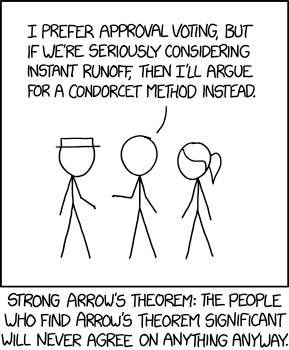

The sciences have likewise taught us to ascertain the several degrees of certainty to which we may hope to attain; […] what are the advantages or disadvantages of various forms of election, and modes of decision dependant on the plurality of voices; the different degrees of probability which may result from such proceedings […]. —Marquis de Condorcet
I consider it completely unimportant who in the party will vote, or how; but what is extraordinarily important is this—who will count the votes, and how. —Joseph Stalin
With instant-runoff voting on the ballot in Massachusetts this year, I’ve been reading about the math behind voting systems. As a theoretical problem, the literature is rife with fascinating results and paradoxes. More pertinent, though, is what effect this measure would have on the actual political process in Massachusetts. It would be a significant change to the electoral process, so it’s worth using data to weigh the pros and cons. I don’t presume to tell anyone how to vote on 2; only to collect some of my own thoughts on the matter.
Instant runoff, like all voting systems, is sometimes derided as electing the “wrong” candidate based on the voters’ expressed preferences. It’s important to remember that, in the absence of either perfect unanimity, there is no single correct way to generalize a set of individual preferences into a group preference; different voting methods simply represent approximations to this, and, though some are better than others, none is perfect.
1 Instant Runoff Voting
Broadly speaking, there are two kinds of voting system. In ordinal systems, voters express relative preferences, usually by ranking candidates. Ordinal methods include instant runoff voting, Borda count, and the various Condorcet methods. The most common system, and perhaps the simplest, plurality voting,1 is a kind of degenerate ordinal system that only looks at (and thus only asks) voters’ first choices. In cardinal systems, voters express absolute preferences, giving each individual candidate a numeric score in the case of range voting, or a binary yes or no in the case of approval voting.
Instant runoff (hereafter IRV) was developed in the 1870s by William Ware, an architect who also designed Harvard’s beautiful Gothic-revival Memorial Hall. The usual explanation goes like this:2 voters rank candidates from their first choice to their last. If a candidate gets a majority (more than 50%) of first-choice votes, that candidate wins. Otherwise, the candidate with the fewest first-choice votes is eliminated, and ballots for that candidate run off to those voters’ next-choice candidates. Then the ballots are tallied again, and the process repeats, with last-place candidates eliminated, until one candidate has a majority.
{kind=link}
There’s an equivalent3 formulation that may help to illustrate things. Imagine you’re running a traditional election, in which each person casts a single vote, but in which the winner must get a majority. If this doesn’t happen, there is a second election: you throw away ballots of the voters who voted for the least popular candidate, call those voters back, and force them to vote for one of the remaining candidates. You recount all the ballots and see if anyone has more than 50%. If not, you remove the last-place candidate from the ballots, call back all voters, and have them vote again. Repeat until there is a winner (or, heaven forfend, a tie). Of course, asking voters for their fully ranked choices at once means you don’t have to have multiple successive elections—that’s why instant runoff is instant.4
Much support for IRV comes from dedicated advocacy nonprofits such as FairVote, and from third parties vying for a fighting chance at the polls. Opposition often comes from the Democratic and Republican Parties, which allows supporters to paint IRV as a grassroots, anti-system movement. These groups have put forward various arguments for and against IRV.
1.1 Pros
1.1.1 Nuanced positions
The clearest benefit of IRV—and most systems besides plurality—is allowing voters to express nuanced positions, rather than forcing them to throw all their weight behind a single candidate. Given this information, though, it is less clear how to sensibly cohere it into a single choice; hence the existence of multiple competing voting systems.
1.1.2 Immunity to vote-splitting
The best-advertised benefit of IRV is that it prevents minor third-party candidates from “spoiling” the vote for their ideological peers—the famous examples are (for liberals) Nader taking votes from Gore in 2000, and (for conservatives) Perot taking votes from Bush in 1992. By way of example, fig. 1 shows the results of an election between the Purple Party and the Yellow party.
Two candidates, B and C, ran under the Yellow platform, splitting the vote. In a plurality election, the Purple candidate A would win. Under IRV, though, Purple has failed to attain a majority, so there is a second round (fig. 2).
The votes of the least popular candidate, C, are reallocated to B, those voters’ second choice, and B wins with a majority.
Of course, in national elections, third parties rarely manage numbers like C did, because would-be C voters vote tactically (i.e., against their preferences) for B to avoid an A victory. I don’t know how many major-party voters would truly have preferred a third-party candidate, but while more than half of Americans think that the two major parties “do such a poor job that a third major party is needed”, fewer than ten percent of voters typically vote third-party. This is pretty damning for plurality, but not the whole story; as we will see, there are other kinds of spoilage under IRV.
1.1.3 Guaranteed majority winner
Proponents of IRV often point to the majority criterion as evidence that IRV elects a “majority winner”. This is technically true, but a bit misleading, since the round in which the voters express a majority opinion may contain only a small subset of the original candidates.
1.1.4 More positive campaigning
Proponents of IRV often claim that it reduces negative campaigning, since candidates must expand their campaigns to try to capture second-choice votes from outside their bases. The claim, prima facie, seems pretty fishy—after all, candidates are still jockeying for a single seat, and even in Cambridge, where the nine city councillors are chosen by a variant of IRV, candidates ask for a #1 vote—never for #2. However, Todd Donovan, Caroline Tolbert, and Kellen Gracey5 surveyed six cities by phone in 2013, and found that voters in the three cities using IRV perceived less negativity and criticism in political campaigning than in the control cities. Of course, this doesn’t prove causation: the authors themselves note that “it may be that cities with a more civil and less adversarial political context were somehow more likely to adopt preferential voting.”6 It would be most interesting to see voters’ perceptions within a city before and after IRV is enacted. Nonetheless, this is encouraging for voters who are tired of jejune smear campaigns.
{kind=link}
1.2 Cons
1.2.1 Complexity and cost
A common bugbear is that IRV is too complex in some way—this will turn out to be overblown. A related, and serious, concern is the need to replace perfectly good voting machines at significant cost to the taxpayer. Even educating voters could be expensive: mailing informational pamphlets to 2.6 million households at a 19¢ bulk rate would cost nearly half a million dollars.
Of course, complaints about implementing the algorithm itself are patently unfounded—it can be done in just a few lines of code, and has linear time complexity in both the number of voters and the number of candidates.
import Data.List
data Candidate = Kiss | Montroll | Simpson | Smith | Wright deriving (Show, Eq)
type Ballot = [Candidate]
irv :: [Candidate] -> [Ballot] -> Candidate
irv candidates ballots
| any (> 0.5) shares = last rankings -- If we have a majority, return the winner
| otherwise = irv candidates' ballots' -- Otherwise, rerun with new parameters
where
-- Get vote share of each remaining candidate
shares = map (\c -> (genericLength . filter (== c) $ map head ballots) /
(genericLength ballots)) candidates
-- Rank candidates in (ascending) order of share
rankings = map fst . sortOn snd $ zip candidates shares
-- Remove eliminated candidates and exhausted ballots
candidates' = candidates \\ [head rankings]
ballots' = filter (not . null) $ map (dropWhile (`notElem` candidates')) ballots1.2.2 Unequal representation
Another complaint about IRV is that it doesn’t treat all votes equally. Kathy Dopp writes that:
Some voters’ second choices are considered in a timely fashion when their second choice candidates are still in the contest. Less lucky voters’ [sic] have their second choices considered only after it is too late to help that candidate to win. Some of the most unlucky voters only have their first choice considered, even though their first choice candidate loses.
and an anti-IRV op-ed in the Globe posits that:
[IRV] thus gives some voters multiple bites of the election apple. At the same time, it effectively disenfranchises other voters—those who don’t rank enough candidates for their ballot to last through multiple rounds of tabulation.
This seems to rest on a very strange notion of what it means for two ballots to be equal. The usual, and I think correct, rejoinder is that some voters have their first choice considered multiple times, while for others consideration runs down their ballot as their favorites are successively struck off. A ballot expressing n preferences is guaranteed to be counted in the first n rounds, and one expressing all preferences will always be in contention. It is the same as there being n consecutive elections with fewer and fewer options. Since in reality these “elections” take place at the same time, it costs voters nothing to fill in one extra bubble; if they don’t, presumably they simply don’t care.
1.2.3 Non-additivity
In an IRV election, every ballot needs to be tallied to know whether a runoff is necessary. This means that there is no meaningful notion of a subtotal in IRV. Unlike in a plurality election, the collection of ballots from a certain district don’t add to anything, so one can’t really say who the district “voted for”. This is mostly a curiosity—its only real effect is precluding early reporting, which at any rate is notoriously unreliable and possibly even detrimental, having significant effects on voter turnout.7
1.2.4 Paradoxical results
Much more serious are IRV’s violations of expected behavior. IRV can lead to some very strange behavior, an in particular to violations of monotonicity, by which tactical voting by organized blocs is made possible. To see how, let’s look at the strange case of Burlington.
2 Burlington, 2009
The 2009 mayoral election in Burlington, Vermont unintentionally became a case study in the efficacy of IRV—and a parable for anti-IRV crusaders after the controversial results led the system to be scrapped the following year.
2.1 Meta concerns
Some commentators were concerned about the complexity of IRV—voters would either fail to understand the new system, or simply be unwilling to express preferences. The latter concern was not borne out; most voters expressed preferences, with interest predictably dropping off by an average of 25% with each successive choice after the first (fig. 3).
Furthermore, the introduction of IRV in 2005 did not depress turnout; as fig. 4 shows, it increased even as the population stagnated.
City population est.
Votes cast for mayor
IRV in use
Some also expressed concern that introducing ranked choices would render ballots dauntingly complex for some voters. The complexity of a ballot, though, depends much more on the way it presents options than on the options themselves. A well-designed ballot works with voters; a poorly-designed ballot stymies them.
A Florida ballot from the 2000 presidential election in Florida is shown in fig. 5. While Palm Beach’s infamous “butterfly ballots” dominated the news cycles, these ballots from Duval County are arguably worse—the New York Times reported that the two-column layout made voters were twelve times as likely as other counties to accidentally vote for two candidates.
.jpg){kind=link}
Other factors besides the columnar layout contribute to the poor design. The incredible preponderance of horizontal lines makes it impossible to divide the ballot into logical sections. They separate the presidential candidates from each other—though not the others—and offset the highest-level titles (“Congressional”) above and below. In addition, the party labels for the presidential candidates are the same size and style as the smaller titles (“United States Senator”). It is easy to see how a voter could mistake the presidential candidates in the middle column for those in another race entirely.
By way of contrast, a ballot from the Burlington election is shown in fig. 6.
This ballot admittedly has fewer races to collate, but still has to collect rank information. It does so elegantly with a tabular display, like what Tufte calls a small multiple:8
An economy of perception results; once viewers decode and comprehend the design for one slice of data, they have familiar access to data in all the other slices. As our eye moves from one image to the next, this constancy of design allows viewers to focus on changes in information rather than changes in graphical composition. A steady canvas makes for a clearer picture.
Indeed, unlike Duval County, which saw fully nine percent of its ballots invalidated in 2000, Burlington saw only four ballots incorrectly filled out—less than a twentieth of a percent. Exit polls from the 2006 election further showed that only 8.6% of voters found the ballot confusing.
Thus, concerns that IRV was too complicated seem to have been unfounded—though not entirely unfair. Voting systems can be arbitrarily complex, particularly ones that elect multiple winners, and it would not be reasonable feed citizens’ votes into what may as well be a black-box algorithm and expect them to placidly accept the results. Whatever the merits of a voting system, it should also be simple enough for a typical eighteen-year-old to understand, and IRV seems to fit this bill.
2.2 Instant runoff results
After a successfully executed election, the votes were tallied.9 The candidates were Bob Kiss (Progressive, incumbent), Andy Montroll (Democrat), James Simpson (Green). Dan Smith (Independent), and Kurt Wright (Republican). Had this been an ordinary plurality election, only voters’ first choices (fig. 7) would have been considered. The winner, with less than a third of the votes, would be the conservative Wright, with the liberal vote split between Montroll and Kiss. In a two-round system, as used by France, Kiss and Wright would have appeared on a second ballot, and—assuming the same relative preferences as the first time—Kiss would have won by four points.
Of course, IRV requires a majority, which, even after eliminating Simpson and the write-ins, we clearly do not yet have. The next-least-popular candidate is Smith—his votes go more or less evenly to the remaining three.
Still no majority. Next to go is Montroll. His votes, and the votes of the Smith voters reallocated to him, are reallocated in round 3.
With most of the votes going to Kiss, he ekes out a majority. (Since some ballots didn’t specify higher choices, the percentages are of the ballots remaining after each runoff.)
The problem with this result is that Montroll was individually more popular than any of the other candidates. How, then, did he fail to be elected? Basically, voters could be divided into liberal and conservative blocs, with liberals favoring Montroll or Kiss, and conservatives favoring Wright, but preferring the more moderate Montroll over the far-left Kiss. But since Wright was a contender to the last, the lower rankings of his supporters were never accounted for. This can be more easily seen by simulating the results of other voting systems.
2.3 Borda count results
In a Borda count, all of a candidate’s votes are weighted and added; so each first-choice vote gives a candidate 5 points, second-choice votes 4, and so on. For instance, Kiss’ Borda score would be . This method gives much more weight to lower-ranked candidates than other methods, and is therefore highly amenable to centrist candidates with broad, if tepid, appeal.
Wright and Kiss were popular first-choice votes, but didn’t garner many next-choice votes, while Montroll and Smith emerged as compromise candidates, with many more second- and third-choice votes than first-choice (the former would indeed have been the Borda winner). Simpson proved very unpopular, with mostly last-place votes.
2.4 Condorcet results
Condorcet voting methods pit each candidate against the others round-robin style; if one always prevails, that candidate wins. The Condorcet criterion of always electing the pairwise winner, if there is one, is sometimes imposed on other methods. Of course, there is not always such a winner, as in rock paper scissors. However, the Burlington race did have such a winner—Montroll—and IRV was much maligned after the fact for eliminating him in the second round.
2.5 Summary & lessons
The results of different methods are summarized in tbl. 1.
| Method | Choice 1 | Choice 2 | Choice 3 | Choice 4 | Choice 5 |
|---|---|---|---|---|---|
| Plurality | Wright | Kiss | Montroll | Smith | Simpson |
| Two-round | Kiss | Wright | N/A | N/A | N/A |
| IRV | Kiss | Wright | Montroll | Smith | Simpson |
| Borda Count | Montroll | Kiss | Wright | Smith | Simpson |
| Condorcet10 | Montroll | Kiss | Wright | Smith | Simpson |
Since Montroll would have beat any other candidate head-to-head, he would have been the winner if he had made it to the final round. Of course, this would have happened if more people had ranked him first. But, incredibly, it could also have happened if a contingent of Wright voters had simply stayed home. Let’s say that a random third of Wright voters had stayed home on election day.
Wright now starts out third in the rankings (fig. 12), and is still last after Smith is eliminated (fig. 13).
Now Wright is eliminated, and the bulk of his votes go to Montroll, carrying the latter to a four-point victory.
This may seem like an esoteric or academic concern (headline: “If Public Had Voted Differently, A Different Candidate Would Have Won”), but its threat is twofold. One is that it makes tactical voting possible. It’s hard to win the match; it’s easier to bet against yourself and take a fall. Of course, tactical voting occurs under plurality voting as well: namely, Nader supporters bubbling in Gore to hurt Bush. By not expressing their true preferences, they throw the match for their first-choice candidate in order to help their more popular second choice. The concern here is of the same kind—that a bloc of Wright supporters could scuttle their own candidate to get a second-favorite in.11
The second problem is that the results now border on incongruous—surely whether Kiss or Montroll wins should not depend on the number of Wright voters who turn out. This is a violation of the rule of independence of irrelevant alternatives. (A similar result, of course, would have happened if these Wright voters had still voted, but ranked Montroll first.) This, in a sense, makes Wright the “spoiler” in this election. It actually gets weirder; it is theoretically possible for just the right subset of Wright voters to hurt Kiss by voting for him instead of Wright.
Kiss now has a very strong out-of-the-gate lead, with Wright barely ahead of Montroll.
With Smith’s votes reallocated, Wright is eliminated, and now all of his votes go to Montroll.
This illustrates how IRV violates the principle of monotonicity, which says that you shouldn’t be able to hurt a candidate by giving them more votes, or help them by taking away votes.12 William H. Riker13 writes that:
If we assume that the purpose of voting is to amalgamate individual tastes into a social decision, then monotonicity requires that voting actually do so by counting all individual judgments in generating an outcome. Moral (as distinct from technical) considerations may arise in choosing between forms of monotonicity. For example, one might prefer a two-thirds majority (monotonic) to a simple majority (strongly monotonic) on ethical grounds. But that some kind of monotonicity be required is hardly a moral question. It is simply a straightforward matter of making the voting system do what it is supposed to do.
Tactical voting, if prevalent enough, could neutralize the boost IRV is supposed to provide to third parties—notice that if Kiss voters were concerned about his viability hurting Montroll and putting Wright in office, they might have bailed on Kiss in the same way. The odds of this happening are pretty slim, as it more or less requires knowing the results in advance (if Wright had any kind of fighting chance, it’s unlikely his voters would have thrown the vote by staying home). But the odds of getting an monotonicity violation, as Burlington did, may be significant enough to worry about.
3 Probability of paradoxical results
Of course, no voting system is perfect; all fall prey to unexpected results given the right input parameters. Much of the literature looks at the probability of not having a Condorcet winner at all; e.g., Riker14 puts it at about 25% for 5 candidates, assuming people vote basically at random. This is of lower import, though, because neither plurality nor IRV may deal with this kind of paradox sensibly—and under plurality, no one would ever even know it happened. More serious is the probability of nonmonotonicity—of seeing a repeat of Burlington in Massachusetts. This can be done theoretically, with Monte Carlo simulations, or empirically, by looking at datasets of past elections.
Joseph T. Ornstein and Robert Z. Norman15 run simulations of three-candidate elections to find the probability of a monotonicity failure, by which giving more votes to the top-ranked candidate A might end up electing candidate C. For this to happen, C must receive more than one fourth of the total votes, and be the Condorcet winner, if there is one. A simplified version of the Burlington election satisfies these requirements, as tbl. 2 shows. Here, A is Kiss, B is Wright, and C is Montroll.
| Relative ranking | Ballots |
|---|---|
| Kiss > Montroll > Wright | 2,043 |
| Kiss > Wright > Montroll | 371 |
| Wright > Kiss > Montroll | 496 |
| Wright > Montroll > Kiss | 1,513 |
| Montroll > Kiss > Wright | 1,332 |
| Montroll > Wright > Kiss | 767 |
They find that roughly 15–20% of elections exhibit this behavior, with the number reaching 50% for elections in which two of the three candidates are ideologically very close. Nicholas R. Miller16 calculates similar numbers—around 50% for certain assumptions about voter distribution, and the election being competitive.
What, then, is the probability of an election being “competitive”? Miller analyzes U.K. Parliamentary races with only three parties, finding that only 5% could be considered competitive. This is encouraging, but Parliamentary elections use plurality voting; IRV may well lead to an increase in competitiveness as third parties vie more strongly. FairVote, a pro-IRV nonprofit, claims that “[o]f the 322 single-winner RCV elections in the United States since 2004 in which we have sufficient ballot data […], 321 elections were won by the Condorcet winner”, although they don’t make their data public (the exception, of course, was Burlington). They also claim that:
There have been 204 single-winner ranked choice elections in the U.S. which included at least 3 candidates. In 96 of these (or 47%), a majority winner was identified in the first round. The remaining 108 races went into the instant runoff before declaring a winner.
They count 381 races total, so half had more than two candidates, and half again had no first-round majority. Miller claims that 60% of the 2,642 Parliamentary elections analyzed had a majority winner. This is significantly different from FairVote’s numbers (, ),17 but it’s unclear that IRV was the cause.
As an educated guess, we can estimate that 10–20% of IRV elections will be “competitive”, and that half of those, or 5–10%, will display a monotonicity failure.
4 Propensity to a two-party system
A well-known critique of plurality voting, known as Duverger’s law, is that it tends toward a two-party system over time. The reasoning, of course, is that voters shy away from voting third-party for fear of splitting the vote. The United States, which has always used plurality voting nationally, has largely hewn to this law, with each party system shakeup quickly stabilizing to two dominant parties. However, some contend that due to paradoxical results like Burlington, IRV has the same tendency over a long enough period.
We can get a sense of whether this is true by looking at countries that use IRV nationally. For example, the Australian House of Representatives, the lower of its houses of parliament, has used IRV since 1918.18 If we look at results of House elections for the past half-century, we see that while politics is largely dominated by the left-leaning Labor Party and right-leaning Liberal and National Parties, a small number of seats have gone to Greens and independent candidates.
Labor
Liberal
Liberal National
National
Country Liberal
Greens
Independent/other
It’s important to note that fig. 18 presents statistical averages. Each bar represents the results of a 150 or so individual elections, each of which might have seen different local factions competing on different issues. Nevertheless, compare this with the party allocations in the U.S. House during the same period:
Republican
Democrat
Independent/other
There are only a handful of independents, most of whom are closely affiliated with one party or another, and only one third-party candidate: Libertarian Justin Amash, MI-3, who was elected as a Republican. So the U.S., possibly because as a side effect of plurality voting, is particularly inimical to third-party representation. We don’t see this effect in Commons elections in the U.K., however, which also use plurality voting, but afford relatively rich third-party representation (note that the pink and gray bands in fig. 20 represent multiple parties).
Labour
Conservative
Liberal Democrats
Scottish & Welsh national parties
Independent/other
This may be an effect of the parliamentary system, which allows coalitions, reducing competition between ideologically similar parties. It may also be an effect of smaller constituencies—about 100,000 people per district in the U.K., versus 750,000 in the U.S.—making it easier for smaller parties to secure local support. The final salient difference is that U.S. House elections are much less consequential than Commons or Australian House elections, because they are more frequent (compare the sizes of the graphs), and because since 1913 the U.S. has also directly elected senators, though it’s unclear why this would make a difference. Possibly, the two-party system is simply too deeply set in U.S. culture to be meaningfully pried away.
5 Conclusion
The pros of adopting IRV seem to be:
- Relative simplicity, assuming the ballots are designed properly
- Allowing voters to express nuanced opinions
- Elimination of spoilage by small parties
- Probable reduction in tactical voting, and the slim possibility of third parties becoming serious contenders
- Possible reduction in negative campaigning
and the cons are:
- A possibly nontrivial one-time cost of converting voting machines and educating voters
- Small (5–10%) chance of spoilage with three or more large parties
- The very remote possibility of tactical voting by voting blocs on the extremes of the political spectrum
It’s important in all this to avoid two traps. One is the Lucas trap: you can’t theorize about the outcome of an election using past data from a different voting system. Both voters and political parties will change their strategies if the system changes. Burlington voters would not likely have voted the same way in 2009 if the decision was to have been by simple plurality.19
The second trap, of course, is of caring more about voting systems than their results. There are many more voting systems out there, many of them combining the methods above, and a whole branch of economics that studies them. It’s easy to get stuck in the mire of voting system wonkery, but only IRV is on the ballot this year, so ultimately it doesn’t matter whether it is better than proportional Bayesian transferable semi-ranked-score-minimax; only whether it’s better than plurality.20 Anthony Gottlieb in the New Yorker points out that:
Mathematics can suggest what approaches are worth trying, but it can’t reveal what will suit a particular place, and best deliver what we want from a democratic voting system: to create a government that feels legitimate to people—to reconcile people to being governed, and give them reason to feel that, win or lose (especially lose), the game is fair.
Incidentally, after a decade of dormancy, IRV is back on the ballot in Burlington. It will be interesting to see if the public warms to it again.
Sometimes given the hokey name “first past the post”. Note that a plurality is not the same as a majority: a majority requires more than 50% of votes, while a plurality just requires more votes than anyone else.↩
See, e.g., PBS or C.G.P. Grey.↩
Assuming voters’ preferences are stable across time.↩
In a two-round system, the second election really does take place, but with all but two candidates removed, to guarantee there will be a majority.↩
“Campaign Civility Under Preferential and Plurality Voting,” Electoral Studies 42 (June 2016): 157–63, doi:10.1016/j.electstud.2016.02.009.↩
Ibid., 162.↩
John E. Jackson, “Election Night Reporting and Voter Turnout,” American Journal of Political Science 27, no. 4 (November 1983): 615–35, doi:10.2307/2110886.↩
Edward R. Tufte, Envisioning Information (Cheshire, CT: Graphics Press, 1990), 29.↩
Full ballot data (ZIP, 72 KiB)↩
See this video for another illustration.↩
The former case is known as an upward monotonicity violation, and the latter a downward monotonicity violation.↩
Liberalism Against Populism: A Confrontation Between the Theory of Democracy and the Theory of Social Choice (Long Grove, IL: Waveland Press, 1982), 51.↩
Ibid., 122.↩
“Frequency of Monotonicity Failure Under Instant Runoff Voting: Estimates Based on a Spatial Model of Elections,” Public Choice 161 (October 2014): 1–9, doi:10.1007/s11127-013-0118-2.↩
“Closeness Matters: Nonmonotonicity Failure in IRV Election with Three Candidates,” Public Choice 173 (October 2017): 91–108, doi:10.1007/s11127-017-0465-5.↩
- ↩
Ireland also uses runoff voting to elect its lower house, Dáil Éireann, to elect its lower house, but it is more complicated as most district races have multiple winners.↩
Indeed, in the 2012 race, after IRV was repealed, only three candidates ran, with the independent barely mustering 5%.↩
(Source: xkcd)
↩